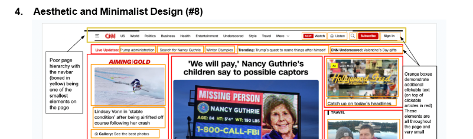
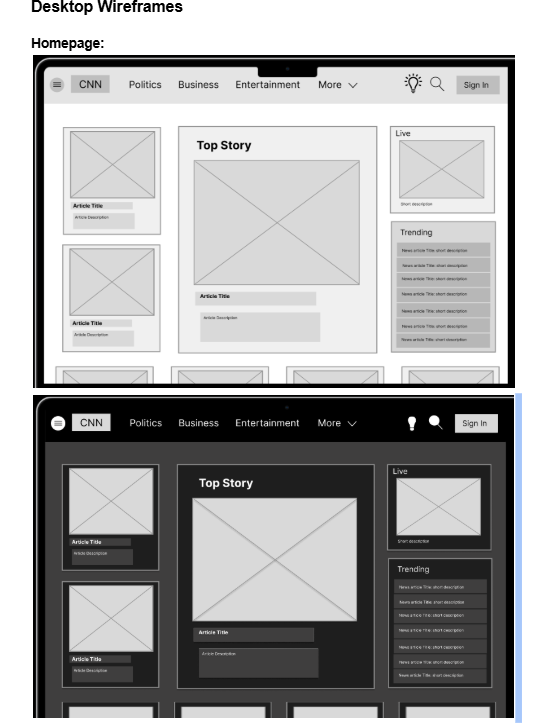
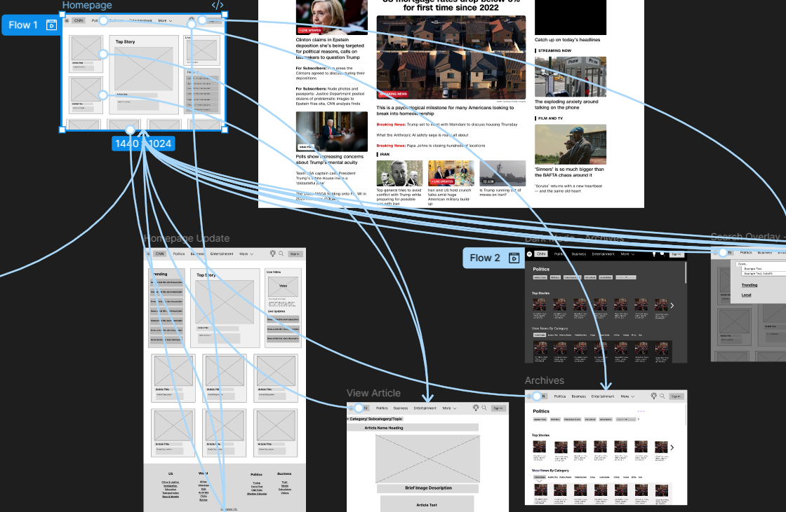
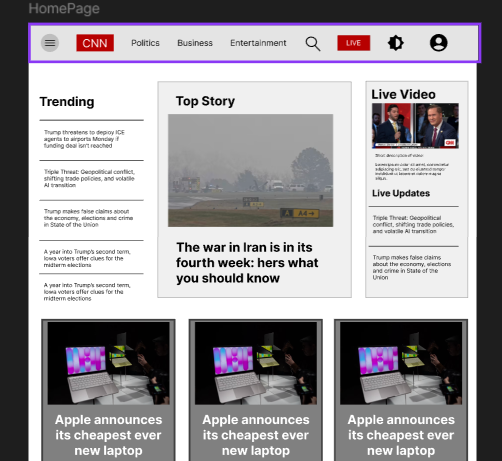

CNN Redesign
Project Overview
-
The problem:
We picked the CNN website for our redesign project. We found that the original design of the CNN website was cluttered and overwhelming, making it difficult for users to navigate and find relevant news content. The homepage was filled with a large number of articles, videos, and advertisements, creating a chaotic user experience. Additionally, the website lacked a clear hierarchy of information, making it challenging for users to quickly identify important news stories. Consistency was another issue we were quick to find with different font styles and sizes for same and similar elements, a layout which stretches at the will of the content, videos articles and advertisments were intistinguishible confusing us at first glance. Users lacked direction when first landing on the page, and the overall design did not effectively prioritize content or guide users to the most relevant news stories. Users who may not be used to navigating the internet or have trouble seeing would easily be confused and frustrated with the lack of grace for new or learning users, easily driving users away. Even for users in more extreme situations there were no options for guidance or accessiblity, no dark mode or even high contrast.
The process
-
Our first task was to study the website and elaborate on exactly what was causing issues, and how we could address the usuability heuristics in evaluation. We each contributed to each heuristic usibility issue, documented what we found and collaborated to understand which ones were the most prominient in the website.

-
In order to be more secure in our findings we had to complete peer usablity testing. We made questions for our peers to answer about the website and including their previous experience, expectations, needs and general feelings about the website. we allowed users to explore asking them questions as they went on including the previous topics mentioned before and questions specific to the actions they were making or planning on making we recorded our findings and took note of what was mentioned the most, what was expected vs what happened, what users had toruble or confusion with, what users wanted more of, and what users liked and disliked.
-
Following the usability testing we had to create a wireframe prototype of the website, this was done using figma and included the main pages of the website, the homepage, subpages, live, the mobile version as well as a dark mode for each. We made sure to focus on the main elements of the website and making sure they were organized in a way that made sense and was easy to navigate, there was a clear visual heirarchy, accessibility and recognition over recall was improved.

-
We used our figma prototype to create a sitemap and navigation plan, including all the pages and subpages of the website, how they would be linked together, and how users would navigate through the website. We made sure to include clear and intuitive navigation, testing navigation flows, making it easy for users to find the information they were looking for and explore the different sections of the website.

Once the flow was completed we tested it on real users. We made a handful of questions going into the testing, including pretest questions, tasked based and post test questions. These questions included asking about the users previous experience with the website, their expectations, needs and general feelings about the website. We then asked them to complete tasks on the website with the issues we found to be the most prominent and the most common interactions. While we observed and asked questions about their actions and feelings as they went. Finally we asked them about their overall experience, what they liked and disliked, what they had trouble with, and what they wanted more of. Once again we recorded our findings and took note of what was mentioned the most, what was expected vs what happened, what users had toruble or confusion with, what users wanted more of, and what users liked and disliked.
-
We created a higherfidelity model, including all the pages the previous model. We took feedback from user testing and came up with solutions and imporovements to our uers problems with the wireframe as well as adding high fidelity eleemtns such as images and colors and interactive elements. We then tested this model on users and took note of the same things as before, what was expected vs what happened, what users had toruble or confusion with, what users wanted more of, and what users liked and disliked. This time we had a different layout for testing, offering a different perspectiev and understanding different problems with a different perspective on solutions. Just as before we took notes and we better understood issues in our own design so we could make improvements and solutions to the problems we found.
-
Finally we began the process of building the website.First creating each page we needed just as we did the low fidelity wireframe, configuring colors, layout sizing, shape and basic navigation interactions. This part of the process had the most changes as implementation proved to be more difficult than expected, and we had to make changes to our design to accomodate for the limits we found during implementation. Then we creaed the main interactions, a search function with populating results,and a sign up and login form. Search was tricky, without react or any sort of real backend it was difficult to implement a search function, internet hadn't been much help either since it was an atypical sitation. Once we got over that obstacle, we even added an feature that users expected based on our testing, a user profile page. We developed micro-interactions to complete the polished feeling our redesigned website including indicators for loading, hovering, and clicking. Lastly was the darkmdoe implementation which proved to be a bit more difficult than expected, changing our initual ideas for dark mode, mostly the colors of things that may have been contrary to the dark mode theme.

wireframe
sitemap
Page Design
-
Home
1. Home
2. This page is the landing page; will function to provide quick relevant information for all, establishing the tone of the page.
3. Potential and active club members Admin, everyone
4. The content of the page will include a Nav, title, logo, news letter, feedback event, and footer.
5. This page will not ask
6. N/A
7. There may be a drop down menu for the Nav, Hyperlinks will be included in the footer, and to other pages
8. Feedback event like a Polls will be included and data will be dispalyted to user. -
About
1. About
2. This will describe the organization and it's history.
3. Everyone
4. The content of the page will include a Nav, title, logo, paragraphs explaining, and photos.
5. This page will not ask for data
6. N/A
7.Hyperlinks may lead to gallery or videos outside of website
8. N/A -
Event/Sched
1. Event/Sched
2. This will display a schedule and event description.
3. Everyone
4. The content of the page will include a Nav, title, logo, Schedule table, Event descriptions, Relevant photos.
5. This page will include a feedback/ idea form
6. Must be signed in
7.Hyperlinks may lead to gallery or videos outside of website. A link COuld lead to a discord server or meeting flyer/organizational promotion graphic
8. Form can be submitted for Admin review. -
Join
1. Join
2. Display responsibilities and requirements for joining the club officially, Includes sign up form .
3. Everyone
4. The content of the page will include a Nav, title, logo, SIgn up form , rules/TOS, general contact form
5. This page will include a Sign up and contact form, users can enter their personal informations to participate
6. Email and student ID
7. Submission and reset buttons
8. Form can be submitted for Admin review. -
Gallery
1. Gallery
2. This will display photos relevant to the game club, including events, members and more.
3. Everyone
4. The content of the page will include a Nav, title, logo, Relevant photos and vidoese with captions.
5. Photo submission form with contact and file sharing
6. No
7.Submit and reset
8. Form can be submitted for Admin review.